أحدث الأخبار
- باولو يقود هجوم الزمالك أمام رينجرز في دوري الأبطال
- المالية تعفي المطاعم غير السياحية من ضريبة القيمة المضافة بشروط
- "القضاء الإداري" يلزم الجامعة الأمريكية بتحصيل مصروفاتها بالجنيه المصري
- البورصة ترتفع بنسبة 0.52% في نهاية التعاملات
- إعادة فتح موانىء السويس بعد تحسن الأحوال الجوية
- محام: حفظ التحقيقات مع منى مينا في اتهامها بنشر أخبار كاذبة
- نجوى سالم .. كوميديانة انتهت حياتها بمأساة
- الأرصاد: طقس مائل للدفء الاثنين.. والعظمى في القاهرة 22
الوجه الآخر للتنقيب عن البترول: مياه مهدرة وقرى مهدمة وحقول غارقة
صورة من أحد مواقع التنقيب عن البترول - أصوات مصرية
- "التكسير الهيدروليكي".. تقنية تهدد الخزان الجوفي لمصر
- بئر النفط يستهلك نصيب مواطن مصري من المياه في ٥٢ عاما
- قوانين ضعيفة والرقابة غائبة على وسائل الحفر وتصريف المياه
- هيئة البترول صامتة حيال تطبيق هذه التقنية رغم اﻻنتقادات العالمية
تحقيق: مها البديني
الموت لا يعني دائما الراحة من مشاكل الحياة بخاصة في قرية فارس بمحافظة أسوان في جنوب مصر. فالمياه الجوفية تغمر المدافن وتخرج عظام الأموات من مرقدهم الأخير.
أنّى تتجه عيناك سترى المياه المتفجرة من الأرض تختلط بالصرف الصحي داخل مرافق القرية المقدر عدد سكانها بخمسة عشر ألف نسمة، نتيجة عمليات التنقيب عن النفط والغاز واعتماد تقنية التكسير الهيدروليكي- التي أعلنت مصر رسمياًعن بدء استخدامها عام 2015 رغم حظرها في غالبية الدول المتقدمة.
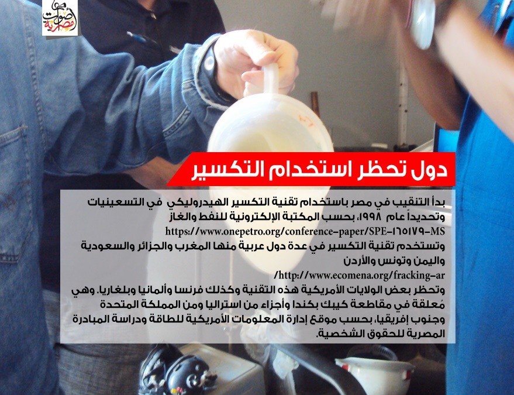
عيد حامد وأسرته هجروا منزلهم المغمور بالمياه، ليعيشوا مع أقربائهم في منطقة آمنة. لكن المياه تقترب منهم باطراد. أما صباح ذات الستين عاماً فغدت بلا مأوى بعد أن تهدّم منزلها بالكامل. كذلك تغمر المياه حقول المانجو ومزارع النخيل الممتدة على ألف فدان بقرية " فارس"، التي تبدو لزائريها وكأنها تعرضت لهزة أرضية، حسبما لاحظت معدة التحقيق، خلال جولاتها في المنطقة.
على غرار فارس تعاني قرية شوبك المشارقة (ثلاثة آلاف نسمة) في محافظة بني سويف بشمال الصعيد من آثار التكسير الهيدروليكي. عمليات التنقيب والاستخراج التي تنفذها شركة دانه غاز الخاصة تبعد عن قرية فارس عشرة كيلومترات، فيما تبعد أنشطة شركة قارون المشتركة 20 متراً عن قرية المشارقة.
تندرج هاتان الشركتان ضمن سبع شركات كبرى تعلن رسمياً على صفحاتها، استخدام هذه التقنية، لكنّها ترفض الرد على أسئلة معدة التحقيق، باستثناء شركة قارون التي لم تجب - مع ذلك- عن جميع الاستفسارات المتعلقة بالتكسير الهيدروليكي؛ آثاره وقانونية استخدامه.
يحدث ذلك وسط صمت رسمي وتضارب في المعلومات والتصريحات حول بدء العمل بالتكسير الهيدروليكي في مصر. معدة التحقيق توصلت إلى أن استخدام هذه التقنية يتم خارج رقابة الجهات المسؤولة عن هذا القطاع (وزراء- الري حسام مغازي، البيئة خالد فهمي والبترول طارق الملا) في بلد ينتج سنوياً قرابة 225 مليون برميل نفط ومليار 962 مليون قدم مكعبة من الغاز.
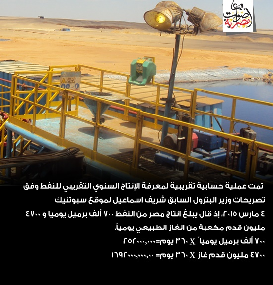
لم تعلن مصر رسمياً استخدام هذه التقنية على أراضيها قبل 4 مارس ،حين صرح وزير البترول المصري السابق شريف اسماعيل الذي يرأس الحكومة حاليا بأن الشركات العاملة ستبدأ العمل بالتكسير الهيدروليكي "الغاز الصخري" في مايو 2015، بحسب موقع سبوتنيك الإخباري. ولم تستطع معدة التحقيق تأكيد هذه المعلومة رسميا لدى الوزير السابق وطاقم وزارته رغم محاولاتها المتكررة.
لكن تسريبات وتصريحات تدل على أن تطبيق التكسير الهيدروليكي الثانوي" بدأ دون إفصاح عام 1998، حسبما يؤكد فنيّ سابق في قطاع البترول. وذكر وزراء بترول سابقون - منهم سامح فهمي – أن مصر"تستخدم التكسير الهيدروليكي لزيادة الانتاجية".
على مدى ثلاث سنوات، جالت معدة التحقيق في أربع قرى متضررة – أكثرها قريتا شوبك المشارقة وفارس- وتحدثت مع سكانهما ومع مسؤولين، لترصد غياب رقابة وزارتي الري والبيئة.
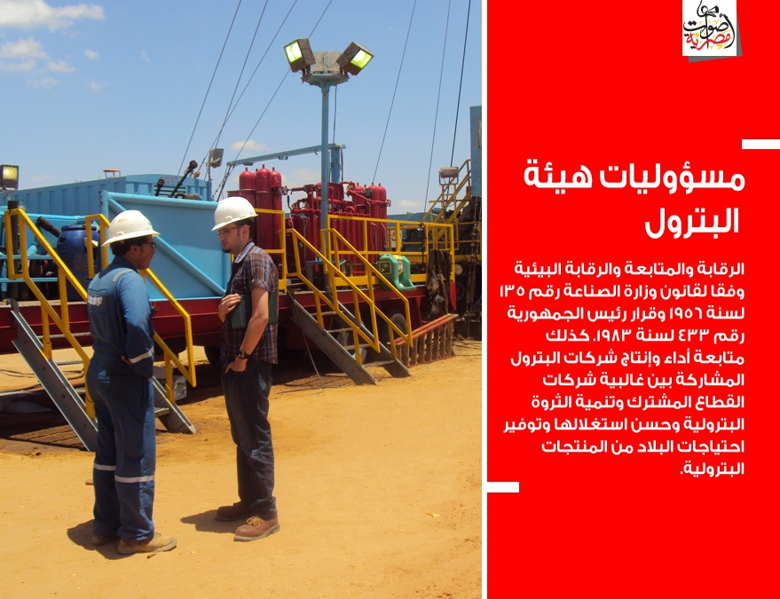
وتوصلت إلى أن شركات خاصة ومشتركة (شراكة بين القطاعين العام والخاص) تعمل بالتكسير الهيدروليكي قبل تصريح وزير البترول السابق بقرب استخدامها رسمياً مطلع مايو. تشمل الشركات الخاصة (شلمبرجير سي دراجون) و (دانه غاز) و(أباتشي) و (شل) و (ميدي تيرا)، فيما تضم المشتركة شركتي (قارون) و (خالدة)، وفق إقرار مهندسين مختصين في تلك الشركات ومهندسين عاملين سابقاً في الهيئة العامة للبترول. وكذلك من خلال ما ينشر على المواقع الإلكترونية الرسمية للشركات العاملة بتلك التقنية.
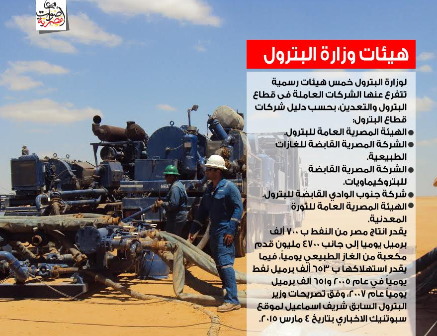
حجب معلومات
ما بين السعي لمقابلات مباشرة وإرسال فاكسات للرد على الأسئلة المطروحة عن قرية فارس، فشلت معدة التحقيق في الحصول على موقف شركتي (دانه غاز) و(سي دراجون) المتشاركتين في جزء من امتياز التنقيب هناك.
الأولى رفضت مقابلة معدة التحقيق بينما لم يفد مدير الثانية المهندس أحمد معاذ بأي تفاصيل ذات قيمة بعد إرسال الفاكس.
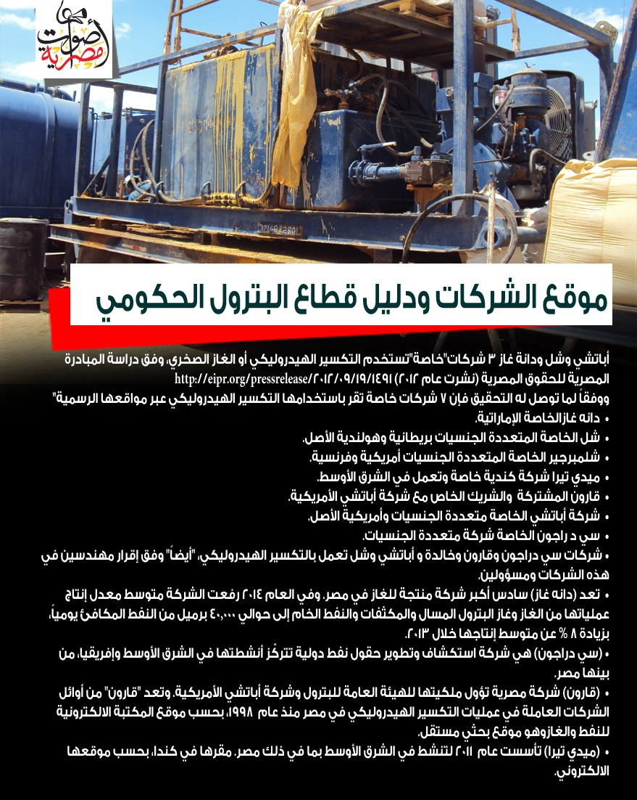
لكن معدة التحقيق زارت شركة (سي دراجون مصر) لمقابلة أحد المسؤولين. المسؤول - الذي رفض الإفصاح عن هويته–اكتفى بالرد بأن الشركة باعت جزءاً من حصتها لشركة (ميدي تيرا) الكندية الخاصة، بسبب ضعف الإنتاجية. وسجل مستوى استخراج النفط 412 برميلاً يومياً،مناصفة بين الشركتين "رغم استخدام التكسير الهيدروليكي في 11 بئرا بحقل "البركة" المتاخم لقرية فارس.
وباعت (دانه غاز) حصتها المتبقية بـ ( كوم امبو) لشركة (ميدي تيرا) في فبراير/شباط 2013.شركة (ميدي تيرا) الخاصة أحجمت هي الأخرى عن الرد على الأسئلة المُرسلة عبر الإيميل.
دانه غاز المصنفة سادس أكبر شركة انتاج غاز في مصر، باعت نصف امتياز التنقيب لشركة سي دراجون في حقلي البركة والبركة غرب في إبريل 2012. وفي تشنوفمبر 2013، باعت الأخيرة جزءا من الامتياز لشركة البترول الكندية "ميدي تيرا" لضعف إنتاجية الآبار"، بحسب ما ورد في الموقع الإلكتروني الرسمي للشركات وتصريحات أحد المسؤولين.
قرى مُتضررة
فضل أبو الروس، المدرس بالمعهد الأزهري في قرية فارس الأسوانية، اصطحب معدة التحقيق في جولة قرب أماكن الحفر غير بعيد عن القرية، حيث يقطن بجوار أحد المنازل المنهارة بقرية فارس.
يشيح ببصره صوب منازل القرية ويتنهد: "أكثر من 100 منزل انهارت وهناك منازل أخرى توشك على الانهيار"، خلال ثلاث سنوات ونصف من أعمال الحفر.
ويؤكد الأهالي أنهم شاهدوا عمليات أولية للتنقيب داخل القرية وبجوارها أسفرت عن ارتفاع منسوب المياه الجوفية. معدة التحقيق لاحظت آثارها وكادت أن تغرق حين غاص جزؤها السفلي في المياه المتحركة.
محافظة أسوان تقر بالأضرار وتصرف تعويضات، بحسب قرار المحافظ الأسبق مصطفى السيد. الكشوف الصادرة عن المجلس المحلي بمركز(كوم امبو) تُشير إلى تعويضات حكومية قدرها نصف مليون جنيه (حوالي 64 ألف دولار) صرفت لمصلحة 64 أسرة من المُلاك المتضررين لكن دون ربط بين الضرر وأعمال الحفر.
على أن متضررين يؤكدون لمعدّة التحقيق أن التعويض لم يُصرف كاملاً لبعض العائلات كما ورد في الكشوف.
أما فلاحو قرية (شوبك المشارقة) ببني سويف الذين أجر بعضهم أراضيه بالتراضي للشركة، بحسب ما أفادوا لمعدة التحقيق فقالوا إن شركة قارون تدفع بدل إيجار سنوي عن كل فدان تعمل فيه يناهز 20 ألف جنيه/ 2600 دولار، ويتم تجديد العقد سنوياً.
لكن الأهالي يشتكون من أضرار الحفر بجوار قريتهم نتيجة انبعاث زيوت متطايرة والضجيج المستمر لآلات الحفر.
تأكيدات مستقلة
رغم الصمت الحكومي، أرجع تقرير مستقل عن جامعة أسوان(2014) والمبادرة المصرية للحقوق الشخصية (2012) الأضرار في قريتي فارس وشوبك المشارقة إلى تقنية التكسير الهيدروليكي.
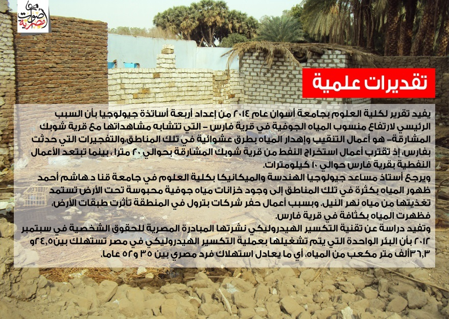
جولة في خلية نحل
بعد خمس زيارات لشركة قارون للبترول، حصلت معدة التحقيق على موافقة لحضور عملية تكسير هيدروليكي تجريها الشركة في بئر هارون بالصحراء الغربية، تبعد عن مدينة 6 أكتوبر 100 كم جنوب غربي القاهرة. كان الهدف معرفة تفاصيل فنية دقيقة عن التكسير الهيدروليكي المتمثل بضخ كميات ضخمة من المياه الجوفية مقابل زيادة إنتاج النفط.
الحكومة تجيز العمل وتحمل الشريك الأجنبي لجميع المخاطر وفقا لقانون 135 لعام 1956، المذكور في موقع وزارة البترول على الانترنت. ينص القانون على تحمل الشريك الأجنبي جميع تكاليف ومخاطر عملية البحث والتنقيب، ولدى ثبوت اكتشاف تجاري وبدء الإنتاج تساهم الهيئة العامة للبترول مناصفة مع الشريك الأجنبي في إنشاء شركة مشتركة تقوم بالعمليات على أن يسترد الشريك الأجنبي نصف تكاليف البحث ويوزع الإنتاج مناصفة.
معاينة ميدانية
في رحلتنا إلى الموقع يوم 18 يونيو 2013، سارت معدة التحقيق عبر أرض رملية قاحلة مستوية في طريق متعرج في الصحراء.بدا الموقع أشبه بخلية نحل تضج بالحركة.
انتشر في الموقع حوالي 25 مهندساً وعاملاً يرتدون خوذات ونظارات شمسية. الخراطيم والمواسير تتمدد في المكان وسط عربات صهريج وماكينات ضخمة هادرة مليئة بالسوائل لضخها في باطن الأرض فضلاً عن ماكينة الحفر.
لم يكن من السهل سماع صوت من يحدثك. الحرارة تشتد كلما ارتفعت الشمس والأتربة الناعمة تملأ الأجواء، وتكتم الأنف والحلق.
معدة التحقيق أمضت يوماً كاملاً برفقة شركة قارون المشتركة والتي تُجري عملياتها بقرية شوبك المشارقة. تتوسط الموقع غرفة عمليات حديدية متنقلة ومصنعة خصيصا لمراقبة أنشطة العمل طولها أربعة أمتار بعرض نحو مترين ونصف المتر، يتوزع فيها نحو عشرة مهندسين يتابعون مجريات العمل عبر أجهزة كمبيوتر تظهر على شاشاتها قياسات للضغط في باطن الأرض وقوة اندفاع السوائل لمنع تلف البئر.
وزعت أوراق على المتواجدين بالغرفة توضّح تفاصيل عملية التكسير الهيدروليكي لطبقة صخرية، مبينة أنه سيتم استخدام 458 برميل مياه مخلوطة ببعض الكيماويات بما يعادل 4561 لترمياه. أحد المهندسين يقول إن العملية بدأت بضخ عشرة براميل في الدقيقة الواحدة،لافتا إلى أن كل عملية تكسير تدوم 25 دقيقة تزداد خلالها قوة ضخالمياه في باطن الأرض فيما يسمى بآلية المسار السريع (Highway)، وهو أحد أنواع التكسير الهيدروليكي.
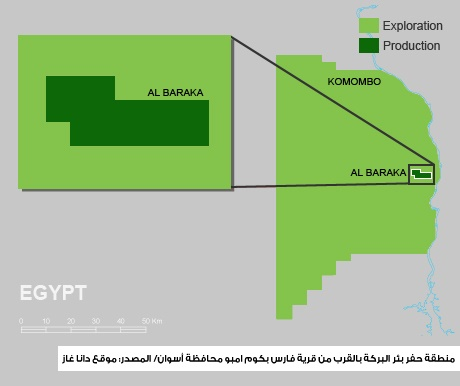
يبلغ المهندسون القياسات التي تظهر على الكمبيوتر إلى المشرف الذي يمكن أن يطلب زيادة كمية المياه أو إنقاصها وفق درجة الضغط. وكانت التعليمات تنقل للفنيين بالخارج للتنفيذ وأيضاً للمهندس المرابط على ماكينة الحفر"البريمة" عبر جهاز لاسلكي.
عملية الـتكسيرالهيدروليكي"Fracking" ذاتها بدأت وقت الظهر تقريباً ودامت ساعتين. لكن سبقها تحضير على مدى ساعات لضبط كمية المياه وخلطها بالكيميائيات ثم التأكد من دقّةالنسب من خلال تجارب في معمل يشرف عليه مهندس مختص.
المسؤول بالموقع المهندس طارق السيد يقول إن ما يحدث في بئر هارون نموذج مصغر لتقنية التكسير الهيدروليكي بهدف التجربة وقياس إمكانية نجاح العملية لأن هذه الآلية باهظة التكاليف؛قرابة مليوني دولار.
وعن نوعية المياه المستخدمة في الحفر، يشرح السيد بأنها "من ذات نوعية مياه الخزانات الجوفية القريبة من سطح الأرض. ويتم حفر بئر موازية لاستخراج المياه أو شفطها من البئر ذاتها، ثم حقن فائض المياه الناتج من عملية استخراج النفط بها في نهاية العملية".
تستخدم الشركات "المياه القريبة الموجودة بموقع الحفر كإجراء بديهي حفاظاً على البئر من تكوين بكتيريا قد تتسبب في إغلاق البئر مستقبلياً وضياع العائد من النفط"، حسبما يقول السيد، مؤكداً أن الشركة لا تنقل " المياه من مصادر أخرى كنهر النيل لاستخدامها في عملية الحفر لأن ذلك سيكلفها كثيراً".
الرقابة غائبة
م. السيد أبو طالب مدير العمليات بشركة قارون يرد على بعض الاستفسارات الخاصة بالتحقيق قائلاً: "إن تقنية التكسير الهيدروليكي ليست مكتوبة بشكل واضح في قوانين وزارة البترول بالرغم من ذكرها في نصوص تصميمات المشروع الفنية لدراسة تقدير التكاليف المالية للعملية قبل البدء فيها".
مسؤوليات وصلاحيات
الهيئة العامة للبترول هي المشرف الرئيسي على شركات البترول الأجنبية والتي تدخل مع الهيئة في مشاريع مشتركة. في هذه الحال تصبح الرقابة "ذاتية" لأن معظم العاملين بشركات البترول هم بشكل أو بآخر تابعون للحكومة، كما يقر أبو طالب.
يتفق معه د. إبراهيم زهران المدير الأسبق لشركة خالدة للبترول قائلا إن "الهيئة العامة للبترول لا تتدخل في الرقابة على التقنيات لأنها تشجع كل ما يؤدي إلى زيادة إنتاجية النفط".
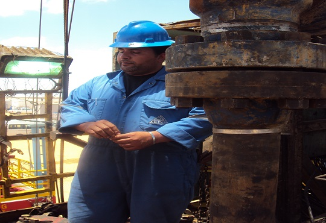
وكانت شركة خالدة،بحسب د. زهران "حفرت 154 بئراً استُخدمت فيها عملية التكسيرالهيدروليكي" في الصحراء الغربية وغيرها من المواقع خلال 2003 و 2004، حين ساهمت تلك العمليات في رفع إنتاج الآبار من 37 ألف إلى 90 ألف برميل يومياً.
ويرتبط إنتاج النفط بظهور المياه،إذ يظهرالماء في البداية ثم يتم استخدامه لتكسيرالطبقات فيما يُعرف بــ"الحقن المائي" بحسب زهران.
من جانبه يؤكد د. محمد الجزار مدير شركة ترايكون الخاصة للخدمات البترولية انعدام الرقابة من وزارة البترول أو أي وزارة أخرى - أثناء الحفر بتقنية التكسير- للتأكد من مدى صلاحية البئر أو مراقبة العملية من الأساس.وكذلك للكشف عن أخطاء فنية بالبئر، والتي قد تؤدي إلى تسريب المياه المختلطة بالكيماويات، وحساب كميات المياه الجوفية المهدرة. ويرى الجزار أن الحكومة تستمر بالعمل في تلك التقنية إرضاءً للمستثمر.
ولمنع استنزاف الموارد المائية يشترط لاستخدام التكسير الهيدروليكي ألا تقل إنتاجية الآبار عن 10 آلاف برميل يومياً كما يحدث في الولايات المتحدة، بعكس ما يحدث في مصر إذ يستخدم التكسير في آبار تقل إنتاجيتها عن 1000 برميل يومياً أي أقل من 10% من الحد المسموح به، وهو ما يعد استنزافاً للموارد المائية بحسب الجزار.
يشير الجزار إلى تضارب معلومات البدء في عمليات التكسير الهيدروليكي في مصر. فالهيئة العامة للبترول بدأت العمل بتقنية التكسير الهيدروليكي الثانوية منذ التسعينيات وإن كانت على نطاق عمليات مبدئية أو Mini Frack وتحدث للتأكد من قوة البئر وتحمله للضغط.
باحثة العدالة البيئية في المبادرة المصرية للحقوق الشخصية ريم لبيب تُعلق قائلة: "عندما بحثنا في الموضوع وجدنا أن عددا من الشركات ومنها شل، أباتشي، دانه غاز، خالدة، عجيبة، وقارون تنفذ تقنية التكسير الهيدروليكي في عدة مواقع بالصحراء الغربية".
حقن فائض المياه في البئر الموازية كان من المخاطر، التي أشارت إليها دراسة المبادرة المصرية للحقوق الشخصية إذ تطالب الحكومة بتحديد "شروط ومعايير معالجة والتخلص من الخلطة الكيميائية المستخدمة في عملية التكسير ووضع ضوابط وإجراءات فعالة لضمان اﻻلتزام بها".
مسؤول تقنيات الحفر بمعهد بحوث البترول الدكتور محمد عبده إبراهيم يتفق مع الباحثة لبيب، مؤكداً أنه " ليس من الطبيعي استخدام التكسير الهيدروليكي في دولة كمصر تواجه مخاطر نقص المياه مستقبليا ودخولها في فقر مائي".
هيئة البترول لا ترد
زارت معدة التحقيق مقر الهيئة العامة للبترول في القاهرة قرابة الـ 6 مرات للتواصل مع المسؤولين والحصول على تعليق حيال ما كشفه التحقيق، لكن دون جدوى.
وفي نهاية المطاف طلب حاتم أحمد نور الدين بمكتب رئيس الهيئة العامة للبترول السابق ووزير البترول الحالي"طارق الملا" إرسال الأسئلة عبر البريد الالكتروني إلى المهندس"الملا"، واعدا بالرد عليها.
وبالفعل أرسلت الأسئلة في الثامن من أبريل 2015، ثم عاودت التواصل مرة أخرى وأرسلت أسئلتها في 26 يوليو 2015. لكن منذ ذلك التاريخ لم نتلق أي رد رغم اﻻتصال هاتفياً بمكتب رئيس الهيئة عدة مرات لاستعجال الرد وإرسال عدة رسائل استعجال عبر البريد الالكتروني، واتصالات استعجال من مكتب المستشار الإعلامي لوزير البترول الأستاذ حمدي عبد العزيز.
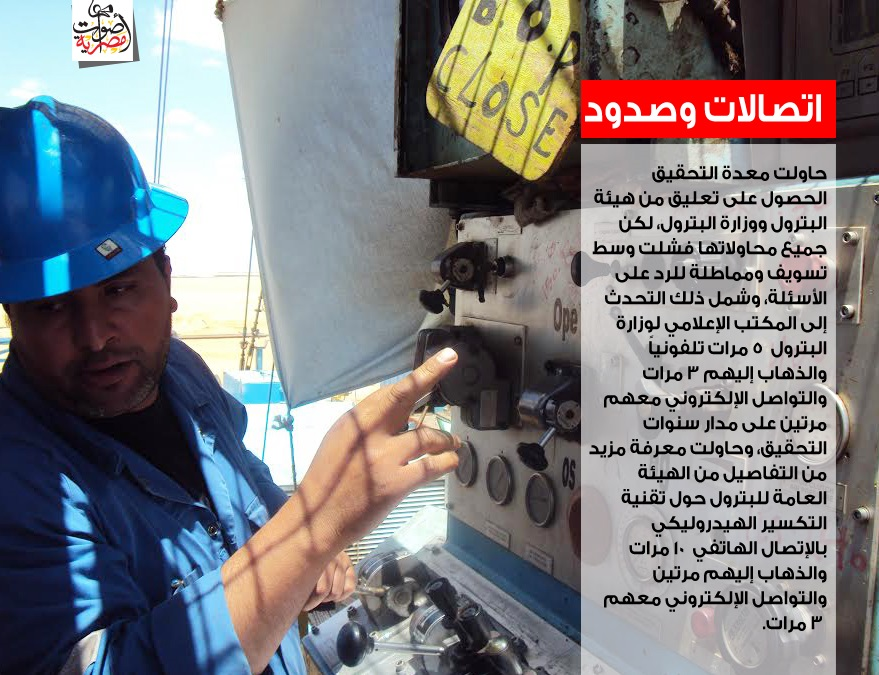
صمت تجاري
شركة خالدة وشركة دانة غاز لم تستجيبا أيضا لطلبات بالتعليق رغم إرسال (فاكس) إلى مدير شركة خالدة محمد عبد العظيم ومدير شركة دانة غاز باتريك ألمان وورد، بالإضافة لإرسال فاكسات لشركات سي دراجون وشلمبرجير وارسال بريد الكتروني لميدي تيرا دون جدوى.
بحثت معدة التحقيق عبر المصادر المتاحة في شركة دانة غاز لتجد إقرارا على موقعها الرسمي باستخدام تقنية التكسير الهيدروليكي في حقل البركة غرب مركز كوم امبو.
لا توجد احصائيات
تواصلت معدة التحقيق مع مسؤول سابق في الهيئة العامة للبترول اشترط عدم كشف اسمه. يقول المسؤول المتقاعد إن الهيئة لا تمتلك أي إحصائيات عن عدد عمليات التكسير الهيدروليكي في مصر. ويؤكد أن تقنية التكسير الهيدروليكي لا تذكر في عقود ترخيص الشركات التي تعمل بتلك التقنية لأنها تُذكر في نصوص تصميمات المشروع لدى بدء عملية الحفر، حتى يمكن تقدير التكاليف، فيما يتم إخطار الهيئة العامة للبترول بتنفيذها في الحقول من خلال التقارير التي تُرسلها الشركات عن الأداء اليومي.
وتبلغ تكلفة عملية التكسير الهيدروليكي الواحدة قرابة المليوني دولار، بحسب المسؤول السابق، الذي يطالب الحكومة بــ"وقف التعامل نهائياً بتلك التقنية أسوة بمنعها في بعض الولايات الأمريكية بسبب انخفاض المكاسب مالية فضلاُ عن تلوث وإهدار المياه الذي تُسببه".
أما المهندس صلاح حافظ نائب رئيس الهيئة العامة للبترول الأسبق فيقول إن استخدام عمليات التكسير الهيدروليكي يحدث في مناطق المياه الجوفية العالية الملوحة. ويصر على أن الشركات الكبرى تلتزم بالقوانين خوفاً من العقوبات.
ومن ضمن الشركات التي تعمل بتلك التقنية شل وأباتشي.
ويؤكد أيضا أن استخدام عمليات التكسير الهيدروليكي الثانوي بدأت في مصرمنذ أوائل التسعينيات. ويستطرد حافظ قائلاً: "يستخدم التكسير في الصحراء في صخور الطفلة ويتم ضخ كميات كبيرة من المياه الجوفية ونسبة من الكيميائيات لاستخراج النفط المحبوس فيها باستخدام عمليات تكسير أولية أو ثانوية بغرض زيادة الإنتاجية النفطية".
جهل بالمسؤولية والتقنية
قانون رقم 84 لسنة 1982 ينص على مسؤولية وزارة الري عن حماية المياه الجوفية. ووفقأً لذلك تحدثت معدة التحقيق إلى مفتش الري بالمكتب الفني لقطاع المياه الجوفية في وزارة الري م.عماد شنب، والذي يؤكد عدم ورود شكاوى من المواطنين تُفيد بحدوث حقن مائي أو استخدام للمياه الجوفية بُطرق غير مشروعة من قِبل شركات البترول.
ويؤكد شنب أنه "إذا اكتشفنا مصادفة وجود تلوث في منطقة ما أو عن طريق شكوى من من أحد المواطنين، يتم توجيه لجنة من وزارة الري لمتابعة ما يحدث".
وبمواجهته بما حدث في قرية فارس بمحافظة أسوان في أقصى الجنوب التي صرفت لها تعويضات من المحافظة، وبمشكلة غرق وتلف أراض بعد تنقيب وحفر شركات البترول، يؤكد المفتش الذي يقع مكتبه في مقر الوزارة بالقاهرة:"أنه لم يعلم بأمر القرية إلا من معدة التحقيق".
على ذات النسق، يؤكد وكيل جهاز شؤون الري بقسم المياه الجوفية سابقاً سعيد فريج أن من يحفر بئرا جوفية دون استصدار تصريح بذلك تصدر بحقه غرامة.ويضيف أن معظم شركات البترول تحقن المياه الفائضة مرة أخرى في مكامن المياه الجوفية، لافتا إلى أن"كُبريات الشركات مجبرة على العودة إلى وزارة الري خوفاً من المسؤولية".لكنه يتحدث عن "صعوبة لدى مفتشي الري في الوصول إلى بعض المناطق البترولية نظراً لبعدها الجغرافي وخطورة تلك الأماكن".
في وزارة البيئة، يعمل المفتشون في إدارة التفتيش البيئي المفترض أن تشمل مهامهم جولات متكررة وغير معلنة للتأكد من التزام الشركات بالاشتراطات البيئية وإلزامها بتوفيق أوضاعها وتقييم الأثر البيئي الخاص بالمشروعات الجديدة، طبقاً لقانون رقم 4 لسنة 1994 والمعدل بالقانون رقم 9 لسنة 2009 ولائحته التنفيذية. وفي حال استخدمت شركات المياه الجوفية، فعليها الرجوع لوزارة الموارد المائية والري، وفق بريد الكتروني أرسلته وزارة البيئة لمعدة التحقيق بتاريخ 5 فبراير 2013.
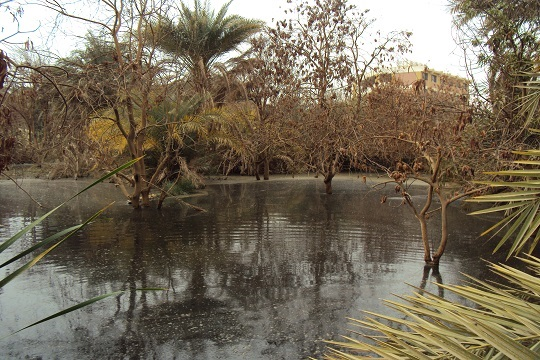
مواقف رسمية متضاربة
د.أحلام فاروق رئيس الإدارة المركزية للتفتيش بوزارة البيئة تؤكد معرفتها بتقنية التكسيرالهيدروليكي، وتؤكد أنه يتم اتخاذ التدابير اللازمة من تحليل عينات مياه لوقف المخالفين. أما مدير المكتب الفني والشؤون القانونية بالإدارة المركزية للتفتيش مجدي فتحي، فينفي وجود أي اخطارات أو شكاوي تُفيد بحقن واستخدام مياه جوفية جوفية من قِبل شركات البترول.
ويرفض مسئولو وزارتي الري والبيئة إطلاع معدة التحقيق على الكشوفات الرسمية للجولات والزيارات الميدانية والتفتيش على حقول وآبار البترول.
عقوبات هزيلة
جمالات سالم المحامية بمركز حابي للحقوق البيئية تنتقد ضعف العقوبات في تشريعات حماية البيئة الصادرة من وزارة الصناعة في القانون رقم 48 لسنة 1982 بشأن حماية نهر النيل والمجاري المائية من التلوث وخزانات المياه الجوفية. "تنص المادة 2 منه على حظر صرف المخلفات السائلة في الماء إلا بعد ترخيص وزارة الري بناء على اقتراح وزير الصحة، فيما تنص المادة 3 على إخطار وزارة الري بنتيجة تحليل العينات قبل صرفها في الماء". "ويُعاقب من يخل بتلك الأحكام بالحبس سنة وغرامة لا تقل عن خمسمائة جنيه ولا تزيد عن ألفي جنيه. ولدى تكرار المخالفة، فعلى المخالف إزالتها وتصحيحها في الموعد الذي تحدده وزارة الري وعلى نفقة المخالف".
أما قانون الري والصرف رقم 12 لسنة 1984 فينص في المادة 46 والخاصة بالمياه الجوفية ومياه الصرف على" حظر حفر أي آبار للمياه الجوفية سطحية أو عميقة داخل أراضي الجمهورية دون الحصول على ترخيص من وزارة الري". وتنص المادة 47 على أنه: "لا يجوز للمرخص له في بئر إنتاجية مخالفة الترخيص باستغلال البيئة أو تجاوز معدلات وكميات المياه المصرح بضخها".
أما عن العقوبات فتشير المادة 95 إلى "غرامة لا تقل عن 200 جنيه ولا تزيد عن ألف جنيه "في حال تجاوز المادة 46 أما في حالة تجاوز المادة 47" فيعاقب المخالف بغرامة لاتقل عن 50 جنيه ولا تزيد عن 200 جنيه".
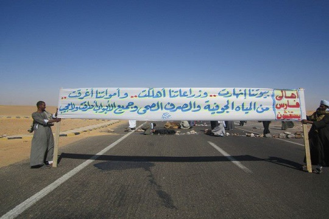
أما فلاحو قرية شوبك المشارقة ببني سويف، فكل تلك القوانين لم توقف أصوات ماكينات الحفر المزعجة والملوثات وإهدار المياه الجوفية وتضرر سنابل القمح وإلتصاق رذاذ النفط الزيتي بأعواده الخضراء .
أمام منزلها، تجلس أم محمد واضعة يدها على وجهها تتفحص شقوق البيت، قلقة من انهيار أجزاء منه.تشعر بالعطش، تدخل منزلها، تفتح صنبور المياه لتشرب لكن لا تروي عطشها، فالمياه ذات طعم ومالحة.
أما قرية فارس فلا تزال مياه الصرف الصحي المختلطة بالمياه الجوفية تغمر منازلهم والحفر لاستخراج النفط مستمر.. مستمر لايتوقف.. والمياه الجوفية تتناقص في الخزان.
أُنجز هذا التحقيق بدعم وإشراف شبكة "أريج" إعلاميون من أجل صحافة استقصائية عربية www.arij.net


تعليقات الفيسبوك